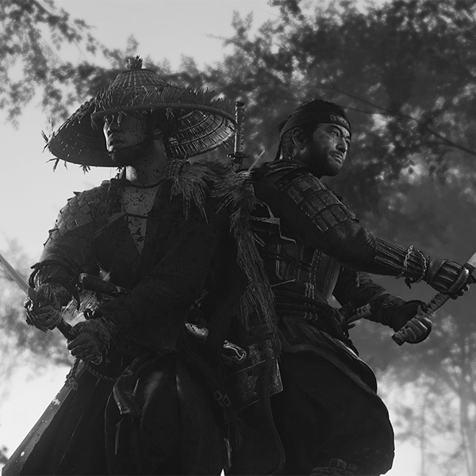
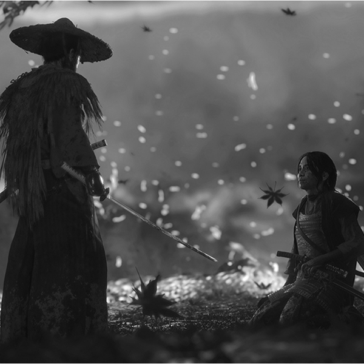

Une aventure envoûtante mais loin d'être sans défaut...
Antoine Clerc-Renaud
Cote
5 étoiles
Date de sortie initiale
Développeur
Sucker Punch Productions
Mode de jeu
Solo et multijoueur
Nous y voilà. Avec Ghost of Tsushima, Sony nous livre sa dernière exclusivité majeure PS4 avant l’arrivée de la next-gen. Une mission remplie par Sucker Punch, studio historique derrière les séries InFamous et Sly Cooper. On peut d’ailleurs voir le dernier bébé de l’équipe comme une synthèse des deux IP, mix entre gameplay agile et ouvert avec une bonne dose d’infiltration. Sauf que ce n’est ni un super-héros, ni le gentil raton-laveur qui fait office de tête d’affiche cette fois. Ghost of Tsushima propose de suivre les aventures de Jin Sakai, samouraï de l’île de Tsushima qui fera tout pour repousser l’invasion mongole. Même si cela lui en coûte son credo et son honneur.
Ghost of Tsushima propose de suivre les aventures de Jin Sakai, samouraï de l’île de Tsushima qui fera tout pour repousser l’invasion mongole. Même si cela lui en coûte son credo et son honneur.
Synopsis
Développé par l’équipe de Sucker Punch à qui l’on doit la série InFamous, Ghost of Tsushima vous transporte dans un Japon féodal en pleine invasion mongole en 1274. On y incarne Jin Sakai, un samuraï, fils de samuraï, neveu de samuraï qui tente, avec son oncle Shimura, de repousser l’envahisseur sans trahir l’honneur du dogme du soldat japonais. Mais après une première bataille, le guerrier est grièvement blessé et sauvé in-extremis. Il sait qu’il devra suivre un chemin différent de celui qu’il connait si tant est qu’il veut bouter les forces de l’Empire mongole hors de l’île de Tsushima.

Il sait qu’il devra suivre un chemin différent de celui qu’il connait si tant est qu’il veut bouter les forces de l’Empire mongole hors de l’île de Tsushima.
Gameplay
Ghost of Tsushima est donc un jeu en monde ouvert avec un fil rouge (empêcher l’invasion mongole) et tout un tas de quêtes annexes pour faire progresser notre héros. En effet, à l’image de Nioh 2, notre samuraï pourra adopter plusieurs poses qui seront efficaces contre différents types d’ennemis façon marteau-ciseau-papier. Il suffit de maintenir la touche R2, ce qui a pour effet de ralentir le temps lors des combats et d’appuyer sur croix, carré, rond ou triangle pour adopter l’une de ces poses. Mais il faudra les débloquer au préalable.
Chaque combat remporté ou quête complétée fait progresser votre légende qui fait office de points d’expérience. Passés certains paliers, on obtient un point de technique que l’on peut dépenser de différentes façons dans le menu option. Vous pouvez augmenter votre maîtrise du katana, l’efficacité de vos armes secondaires comme l’arc ou encore obtenir les fameuses poses. C’est très accessible et simple à comprendre.

Le combat contre plusieurs ennemis vous permet de démontrer votre maitrise du katana...
Combat
Dans Ghost of Tsushima on se bat. Souvent. Contre des mongoles mais aussi contre des bandits bien japonais et même des ours ou des chiens de combat. Les combats contre les humains peuvent s’approcher de différentes manières. On peut faire face aux ennemis en duel, au corps-à-corps ou à distance. De plus on peut foncer dans le tas ou être furtif et agir sans se faire repérer. Le premier vous permettra d’éliminer un ennemi ou plusieurs à la suite instantanément si tant que vous relâchiez le bouton triangle au bon moment. D’autres duels existent pour des combats notamment contre des boss, et fonctionne de la même manière que les affrontements au corps-à-corps mais avec une vue plus rapprochée. Le combat contre plusieurs ennemis vous permet de démontrer votre maitrise du katana avec les boutons carré et triangle tout en changeant de pose et en utilisant vos gadgets d’époque comme des kunai ou des bombes.